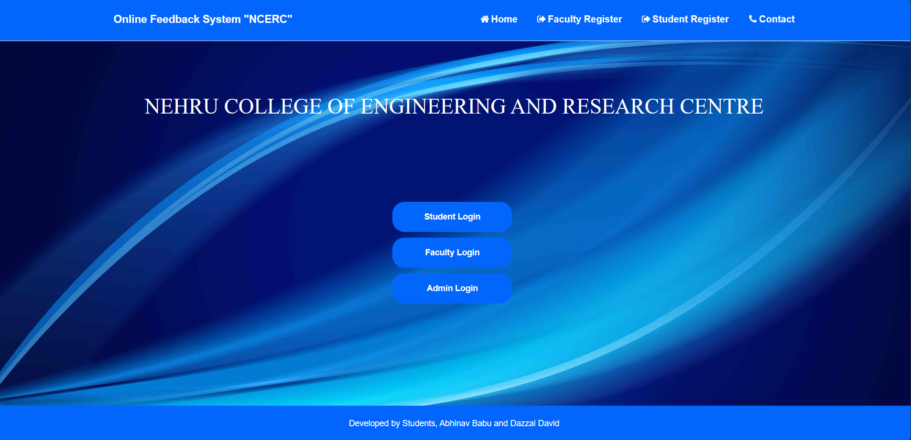
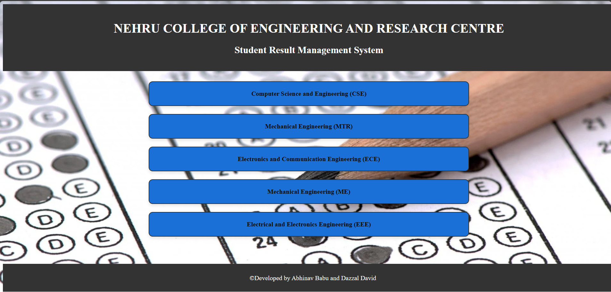
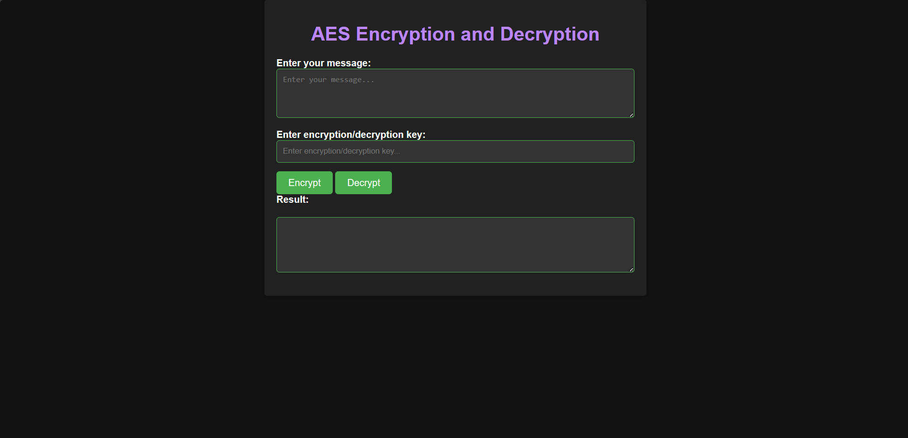
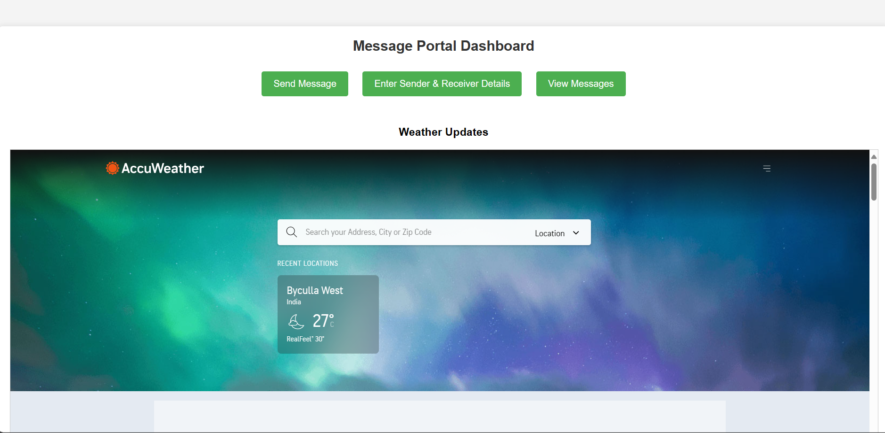
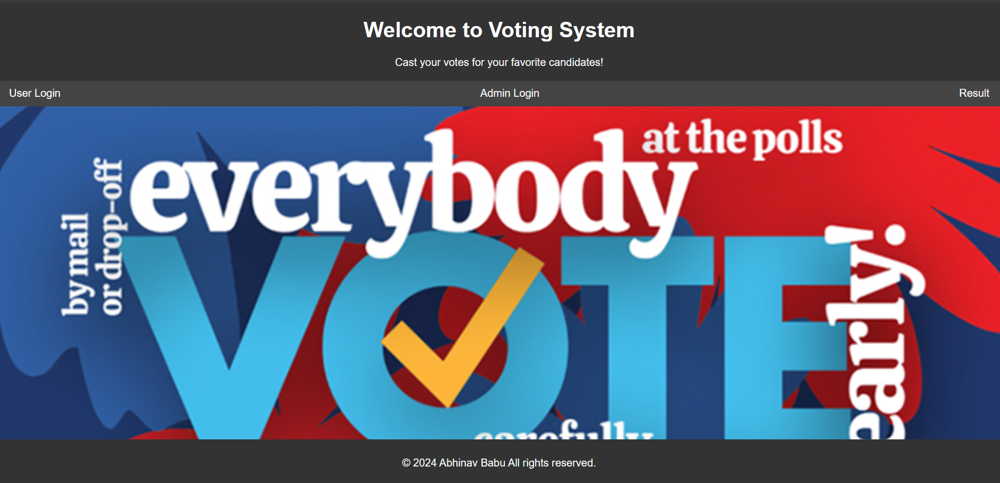
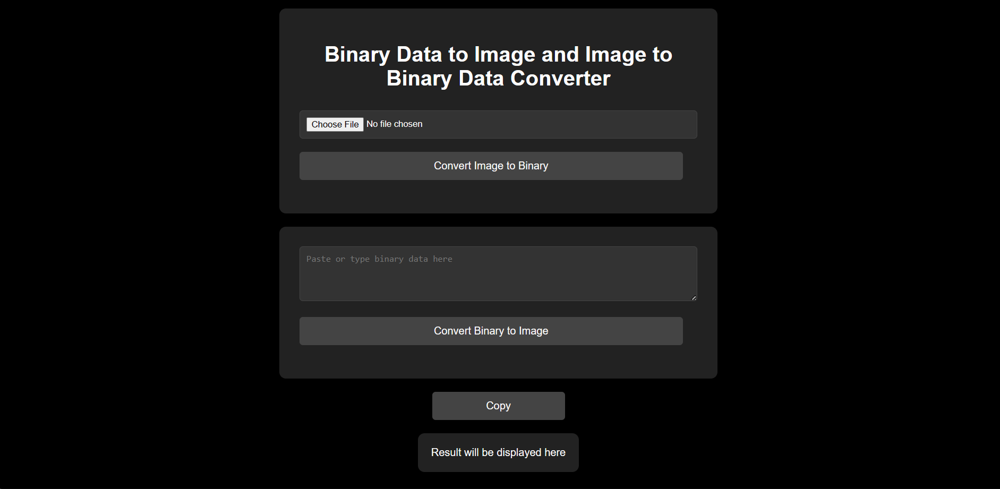
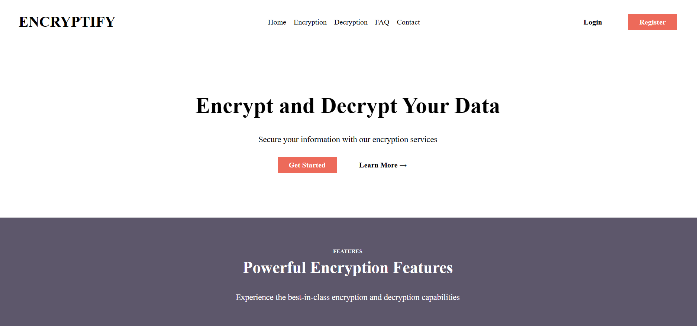
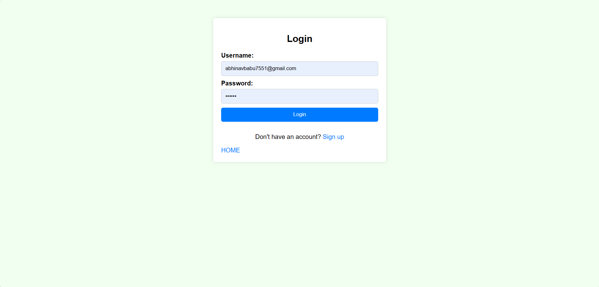
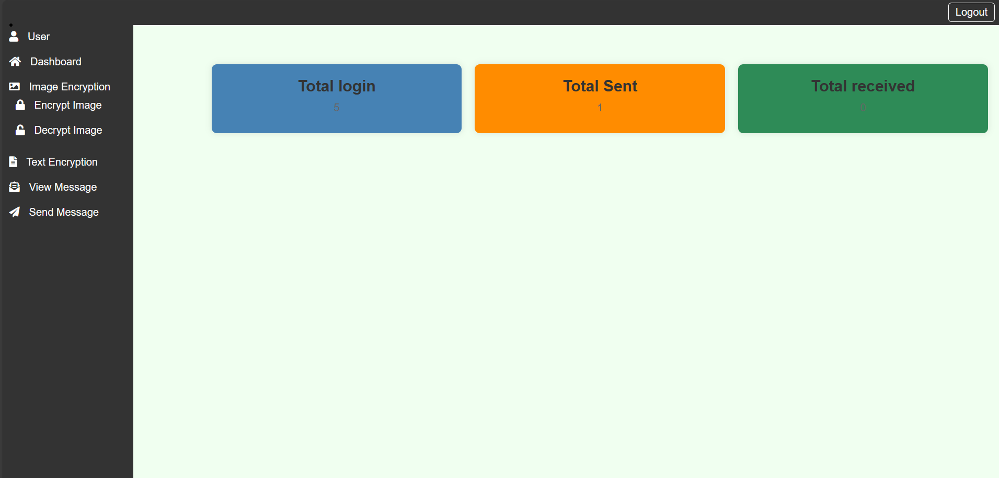
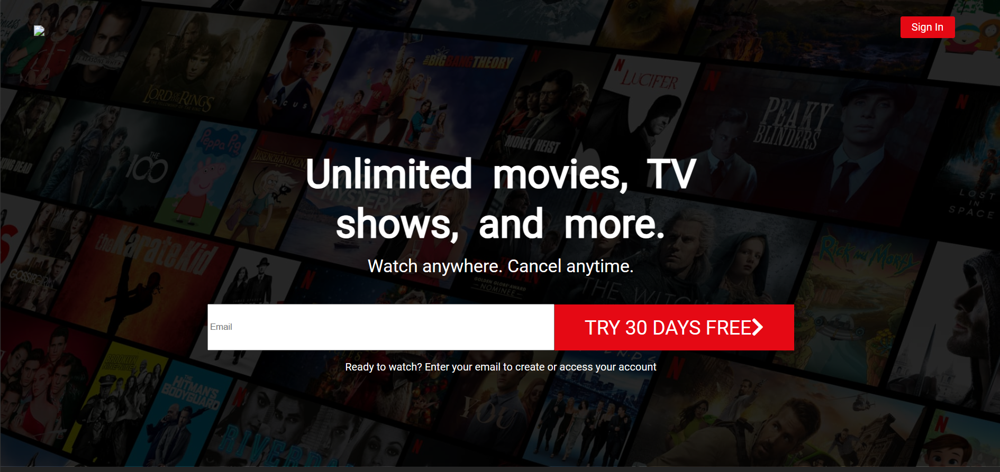

NCERC FEEDBACK SYSTEM
Click here to go to the feedback system.
The Student-Teacher Feedback System is a web-based application designed to facilitate communication and feedback between students and teachers in an educational institution.

NCERC SRMS
Click here to go to the Student Result Management System.
The "NCERC Student Result Management System for Series Exam" is a comprehensive software application tailored to efficiently manage and process the results of series examinations conducted at Nehru College of Engineering and Research Centre (NCERC) and publish the results to students.

AES encryption system
Click here to go to the Text Encryption System.
The "NCERC Student Result Management System for Series Exam" is a comprehensive software application tailored to efficiently manage and process the results of series examinations conducted at Nehru College of Engineering and Research Centre (NCERC) and publish the results to students.

Message transport System
Click here to go to the Message Transport System.
The "Message Transport System" is a sophisticated software solution designed to facilitate seamless communication between users by enabling the creation, transmission, and reception of messages. With its intuitive interface and robust functionality, this system empowers users to exchange information efficiently and effectively. Whether for personal or professional use, the Message Transport System streamlines communication processes, allowing users to compose messages, specify recipients, and send messages with ease. Recipients can conveniently access received messages, review their contents, and respond accordingly, fostering smooth and productive communication interactions. With features such as secure message transmission, notification mechanisms, and user-friendly interfaces, the Message Transport System enhances connectivity and collaboration among users, promoting streamlined communication workflows and facilitating timely exchange of information.

Click here to go to the Online Voting System.
Voting System
The Voting System is a comprehensive software application designed to facilitate fair and transparent voting processes for various purposes, such as elections, surveys, or decision-making within organizations. This system provides an efficient platform for eligible users to cast their votes securely and conveniently, ensuring accuracy and integrity in the voting process.

Image To Binary Converter
Click here to go to the Image To Binary And Binary To Image Convertor.
This HTML file creates a web page for converting binary data to an image and vice versa. This code is useful for scenarios where users need to convert binary data to an image or vice versa, such as when working with image processing, data transmission, or cryptography.Users can either select an image file to convert to binary data or manually enter binary data to convert to an image. The "Copy" button allows users to easily copy the converted result to the clipboard for further use.Overall, this HTML file provides a simple and user-friendly interface for binary data and image conversion tasks.



Encryptify
Click here to go to the Encryptify.
"Created Encryptify, a comprehensive web application featuring user authentication, data encryption, and decryption functionalities, designed to safeguard sensitive information. Developed using PHP for backend logic, MySQL for database management, and industry-standard encryption algorithms, Encryptify ensures secure data handling while providing a seamless user experience."

Netflix UI
Click here to go to the Netflix UI.
"Crafted a dynamic web platform inspired by Netflix, featuring intuitive user interfaces, personalized recommendations, and seamless video streaming capabilities. Leveraged technologies such as HTML, CSS, JavaScript, and PHP to create a responsive and engaging user experience, enhancing content discovery and enjoyment for users worldwide."